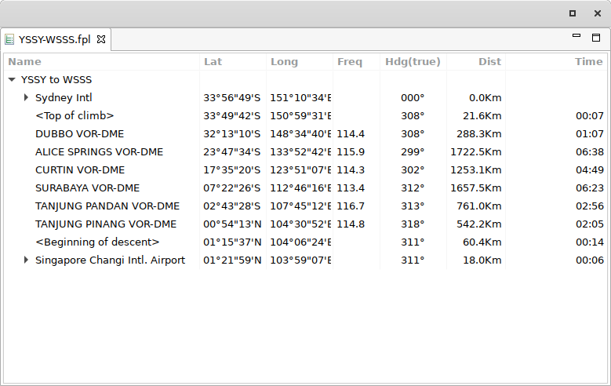
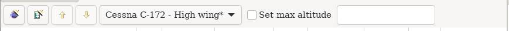

Plan editor¶
The plan editor is where you construct your flight plan. You use the airport and navaid views to select components to add to the plan and use the toolbar and planner menu to manipulate the plan. 
You can open as many editors at one time as you wish, using the main menu.
The plan table lists the plan. Plans are divided into Sectors.
Each sector has a starting and ending airport and a list of intermediate waypoints that may either be based on a navigation aid or may be an artificial waypoint such as the Top of Climb or Bottom of Descent or a GPS reference.
Each sector in the plan may be collapsed or expanded by clicking on the ‘+’ or ‘-’ sign. The Plan table shows each item in the plan and includes a description of the waypoint its latitude and longitude, the heading and distance from the previous waypoint and the estimated time from the previous waypoint.The time is based on the aircraft information supplied in the preferences dialog. The popup menu on the plan table has three options that allow you to add a new sector or, more usefully, find navaids and airports near the selected item in the plan.
Plan toolbar¶

- Generate plan
Generate the content of the selected plan. When you select this action, all the waypoints previously calculated by the planner will be removed (waypoints or nav aids added manually will not be removed) and a new flight plan generated adding waypoints at regular intervals. The type of plan generated can be influenced by you by changing setting in the planner preferences.|
- New Sector
Add a new sector to the plan. The sector will be added to the end of the plan and will start at the end airport of the previous sector. You can move the sector about as required after it is created.
- Move up or down
Move the selected plan component up or down.